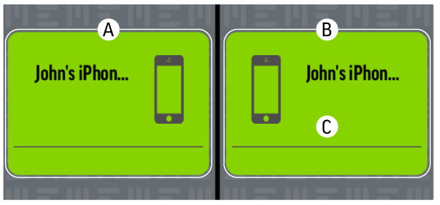
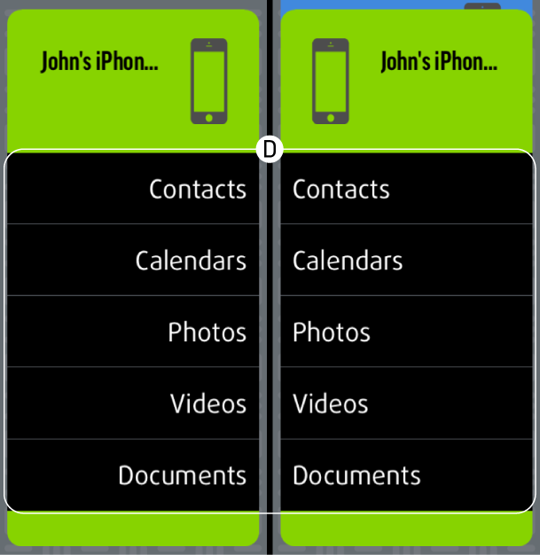

Comprendre l'application
L'application va s'ouvrir sur votre écran principal. Vous y verrez deux boîtes en miroir portant le nom de votre appareil. La boîte de gauche (A) représente votre téléphone et celle de droite (B) représente la sauvegarde MEEM. Toucher l'une de ces boîtes permet d'afficher les catégories de données (D) disponibles pour la sauvegarde. La boîte de droite indique également le temps écoulé depuis la dernière sauvegarde (C).

